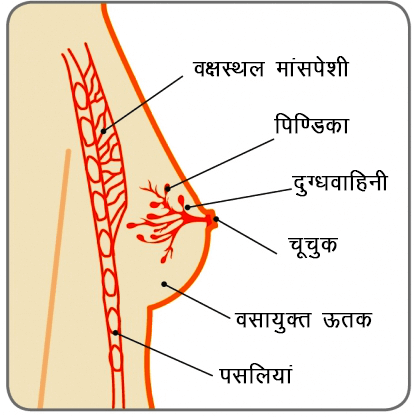

चूचुक

अधिकांश स्तन परिवर्तन सुसाध्य (कैंसरमुक्त) हो सकते हैं। हालांकि, बदलाव का तुरंत पता लगाने से स्तन कैंसर का निदान किया जा सकता है जिससे सफल उपचार की अधिक संभावना होती है, और इससे महिला के जीवित रहने की संभावना काफी हद तक बढ़ जाती है।
हालांकि इस जानकारी का मुख्य उद्देश्य महिलाओं को ही सशक्त करना नहीं है, बल्कि पुरूषों को भी अपने स्तन ऊतक (मांसतंतु) में होने वाले किसी भी परिवर्तन के बारे में जागरूक करना है। कई व्यक्तियों को मालूम ही नहीं होता है कि उनमें भी स्तन कैंसर विकसित हो सकता है। हर वर्ष कुछ लोगों को स्तन कैंसर होता है (1 प्रतिशत स्तन कैंसर पुरूषों में होता है-अर्थात 1/100)।
स्तन

स्तन को स्तन ग्रंथियां भी कहते हैं और यह ग्रंथिमय अंगों का एक जोड़ा होता है जो प्रसव के हार्मोन परिवर्तन की प्रतिक्रिया स्वरूप दूध उत्पन्न करते हैं। ये मुख्य रूप से वसायुक्त ऊतक (मांसतंतु) से बने होते हैं जो छाती के अग्रभाग में उभार के रूप में निकलने लगते हैं और कांख के नीचे व आसपास फैल जाते हैं। इन्हें स्नायुबंधन (लिगमंट) व बड़ी मांसपेशियां सहारा देती है।
हर एक स्तन में वसायुक्त व सहायक ऊतकों से घिरी हुई असंख्य पिण्डिका व दूध नलिकाओं सहित 15-20 लोब्स (भाग) होते हैं (रेखाचित्र देखें)। प्रत्येक पिण्डिका में लगभग 30 मुख्य दूध नलिकाएं होती है जो चूची में आकर खुलती है। चूची के चारों तरफ त्वचा पर गहरी काली जगह होती है जिसे एरीओला कहते हैं।
प्रत्येक कांख कक्ष में लगभग 20 से 30 लिम्फ नोड्स (लसिका ग्रंथि) होती है जो स्तन से तरल पदार्थ स्रावित करती है। ये लसिका प्रणाली का भाग होती है जो शरीर को संक्रमण से लड़ने में मदद करती है। एक स्तन दूसरे से बड़ा होने पर भी पूर्ण रूप से सामान्य होता हैं।
चूचुक
चूचियों का अग्रभाग बिन्दु नुकीले आकार के होते हैं, लेकिन ये दिखने में एक दूसरे से अलग हो सकते हैं। एक या दोनों चूचियां अंदर घुसी हुई (उल्टी) होना सामान्य बात है। ऐसा जन्म से हो सकता है या स्तन विकास के समय से हो सकता हैं। चूचियों पर बाल नहीं होते हैं, लेकिन कुछ महिलाओं में एरीओला के आसपास कुछ बाल हो सकते हैं।
बहुत कम महिलाओं में एक अतिरिक्त स्तन या स्तन जोड़ा हो सकता है, जिसे गौण स्तन कहते हैं। ये अक्सर कांख में होते हैं। कुछ महिलाओं में एक अतिरिक्त चूची या चूचियां होती है। ये चूचियां अक्सर स्तन के नीचे या बेली बटन (बीच) के ऊपर होती है। गौण स्तन व अतिरिक्त चूचियां होना कोई समस्या नहीं है और इन्हें निकालना जरूरी नहीं होता है।
Accessory breasts in armpit

स्तनों में यौवन के समय से किशोरावस्था, प्रसवकाल और रजोनिवृत्ति (जीवन परिवर्तन) तक लगातार बदलाव होता रहता है, जो महिला हार्मोन एस्ट्रोजन के विभिन्न स्तरों पर प्रभावित होता है। .
लगभग 9 से 11 वर्ष की अवस्था में अधिकांश लड़कियों में स्तनों का विकास होने लगता है, लेकिन इसका विकास इस समय से पूर्व व बाद में भी हो सकता है। स्तनों का विभिन्न गति पर बढ़ना सामान्य बात होती है। स्तन विकास के दौरान स्तनों में गांठ हो सकती है। ये सुसाध्य होते हैं और इनका निदान करने के बाद किसी भी उपचार की जरूरत नहीं होती है।
जब स्तन विकसित हो चुके होते हैं, तो मासिक धर्म चक्र (चक्रीय स्तन परिवर्तन) से संबंधित परिवर्तन सामान्य होते हैं। मासिकधर्म से ठीक पहले, स्तन बड़े, मुलायम या थोड़े बहुत गांठदार हो सकते हैं। मासिक धर्म के बाद इस गठिलपन में कमी आती है या अकस्मात गायब हो सकते हैं (हालांकि कुछ महिलाओं में हर समय मुलायम या गठिले स्तन रहते हैं)। कई महिलाओं में मासिकधर्म चक्र (चक्रीय स्तन दर्द) के साथ-साथ स्तनों में दर्द होता है। अधिक जानकारी के लिए स्तन दर्द पर सूचना श्रृंखला देखें। .
सम्पूर्ण गर्भावस्था के समय स्तनपान करने की तैयारी में स्तनों में परिवर्तन होता हैं पहले ये मुलायम हो जाते हैं और फिर अधिक संवेदनशील। स्तन और अरीअल के आकार में अत्यधिक वृद्धि हो जाती है (क्योंकि असंख्य दूध-उत्पादक कोशिकाएं बढ़ जाती है) और त्वचा पर रक्त नलिकाएं स्पष्ट दिखने लगती है। चूचियां अधिक काली/गहरी हो जाती है जो गर्भावस्था के बाद तक बनी रहती है। .
स्तनपान के दौरान अत्यधिक मात्रा में दूध का उत्पादन होता है और एक दिन में कई बार स्तनों के आकार में परिवर्तन होते हैं। जब स्तनपान बंद हो जाता है तो धीरे-धीरे गर्भावस्था से पूर्व की जो स्थिति थी, उसी स्थिति में वापस लौट जाते हैं, हालांकि इनके आकार में परिवर्तन हो सकता है या कठोरता में कमी आ सकती है।
उम्र के साथ-साथ स्तन ऊतकों में परिवर्तन होता है। इसकी कठोरता में कमी आने लगती है और दूध-उत्पादक ऊतकों की जगह वसा भर जाती है जिससे स्तन ढ़ीले हो जाते हैं। ऐसा ज्यादातर रजोनिवृत्ति के बाद जब ऐस्ट्रोजन स्तर गिरने लगता है और मासिकधर्म आना बंद होता है तब होता है। जैसे-जैसे उम्र बढ़ती है, तो स्तनों के आकारों में परिवर्तन हो सकता है। यदि एचआरटी (हार्मोन रिप्लेसमेंट थेरेपी) का सेवन करते हैं, तो स्तनों में कठोरता व कभी-कभी अत्यधिक मुलायम हो सकते हैं।
शरीर की देखरेख का महत्वपूर्ण भाग है स्तन जागरूकता। अपने स्तन और अपने सम्पूर्ण जीवन में इनके बदलाव के तरीकों के बारे में परिचित होना ही स्तन जागरूकता है। यानि कि सामान्य रूप से अपने स्तन किस प्रकार दिखते हैं और अहसास किये जाते हैं, के बारे में जानना ताकि आपके स्तनों में होने वाले किसी भी असामान्य परिवर्तनों को देखकर आप पता लगा सकते हैं।
प्रत्येक महिला के स्तन अलग दिखते हैं और अलग अहसास किये जाते हैं। कुछ महिलाओं के गठिले स्तन होते हैं, या किसी के अधिक बड़े स्तन होते हैं, या किसी महिला के अलग आकृति के स्तन होते हैं। कुछ महिलाओं के एक या दोनों चूचियां अंदर खींची हुई (उल्टी मुड़ी हुई) होती है, जो जन्म से हो सकती है या स्तन विकास के दौरान होता है। जब आप अपने स्तनों की जाँच करें, तो आप ऐसे परिवर्तनों को जानने की कोशिश करें जो आपके लिए अलग हो।
अपने स्तनों को समय≤ पर देखने व अहसास करने की आदत बना लें। इस कार्य को करने का कोई निर्धारित तरीका नहीं है और आप एक ही समय बिन्दु पर देखने व अहसास करने का काम न करें। कुछ महिला कपड़े पहने या उतारते, स्नान करते या शाॅवरिंग करते, या बाॅडी लाॅशन लगाते समय स्तनों की जाँच करती है। कुछ महिलाएं सीसे से देखती है, और कुछ नहीं देखती है। आपको तय करना है कि आपको क्या और कब सुविधाजनक लगता है। एक बात यह है कि स्तन के सभी भागों, छाती के अग्रभाग पर ऊपर की तरफ, कांख के नीचे व आसपास की जगह को देखना आवश्यक है।
अपने स्तन के सभी भाग, कांख और हंसली तक बदलाव की जाँच करें। .
मुझे कौनसे परिवर्तनों के बारे में जानना हैS?
आपको ऐसे कोई भी परिवर्तनों के बारे में जानना होगा जो आपके लिए नया या अलग लगता है, जो इस प्रकार

सौजन्य सेः ब्रेस्ट कैंसर केयर, यूके

सौजन्य सेः ब्रेस्ट कैंसर केयर, यूके

सौजन्य सेः ब्रेस्ट कैंसर केयर, यूके

सौजन्य सेः ब्रेस्ट कैंसर केयर, यूके

सौजन्य सेः ब्रेस्ट कैंसर केयर, यूके

सौजन्य सेः ब्रेस्ट कैंसर केयर, यूके

सौजन्य सेः ब्रेस्ट कैंसर केयर, यूके

सौजन्य सेः ब्रेस्ट कैंसर केयर, यूके

सौजन्य सेः ब्रेस्ट कैंसर केयर, यूके
स्तन जागरूकता के बिन्दु कोड